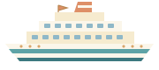
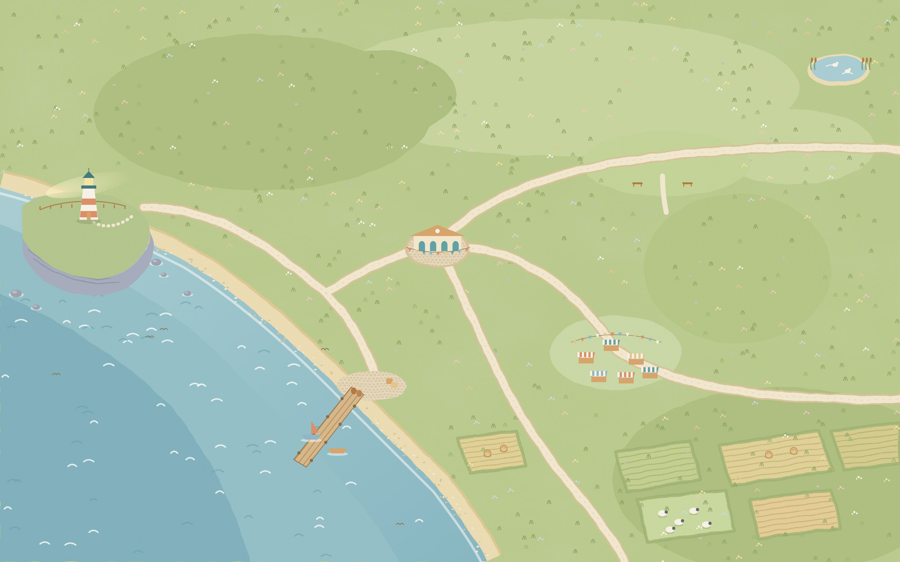

Wanderleafa travelling bookshop in Driftmouth Bay
…Wanderleaf Books
Welcome to Driftmouth Bay!
You drive Juniper, one of the shop’s book caravans. Each day, pick where to park and which books to bring.
Where to spend the day?
Forecast40 books
Loading…
How it's worked out
Check it yourself

Pack Juniper’s crate
or start from
GenrePeople usually askPriceIn the cratePacked vs asked
Loading…
Opening the ledger…
Where else could Juniper have gone?
Saturday 14 June 2025
or try
Weather forecast ·